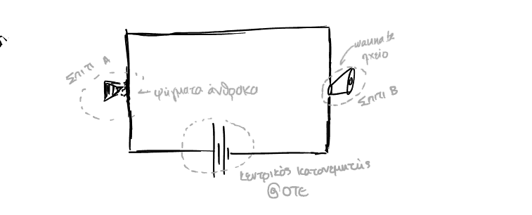
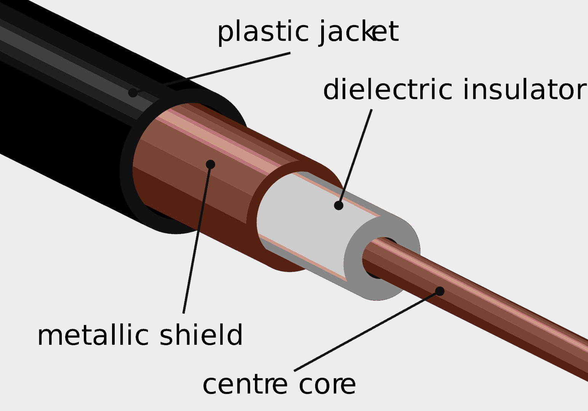

Διάλεξη (1): Υλική εξέλιξη των δικτύων.
Table of Contents
Δεν είναι ιδιαίτερα ποιοτικές σημειώσεις, τόσο λόγω της αδυναμίας μου να συγκεντρώσω κατάλληλα το αντικείμενο όπως αυτό διδάσκεται, όσο και λόγω της έλλειψης χρόνου για άμεση επανάληψη του αντικειμένου με αποτέλεσμα να μην θυμάμαι αρκετά καλά ορισμένες εγκυκλοπαιδικές αναφορές.
Εισαγωγή (επανάληψη στα της αρχικής διάλεξης)
Figure 1: Κάνοντας εικόνα τις διαφορετικές απαιτήσεις καλωδίων
Με το κόστος του δικτύου, το βασικό ζητούμενο είναι η ισορροπία μεταξύ κόστους και QoS (όχι με τον αυστηρά τεχνικό όρο). Όσο μεγαλύτερο είναι το πλήθος των γραμμών (\(M\)) τόσο μεγαλύτερο είναι και το κόστος του δικτύου, με αποτέλεσμα να θέλουμε, για δεδομένο αριθμό συνδεδεμένων συσκευών (\(N\)) να έχουμε ένα όσο το δυνατόν μικρότερο πλήθος καλωδιών, χωρίς όμως αυτό να επηρεάζει τους χρήστες.
Αυτό γίνεται ουσιαστικά στο τρίτο στάδιο που φαίνεται στην εισαγωγική εικόνα.
Εγινε ακόμα γενική αναφορά σε LANs, WANs, και την μεταξύ τους σύνδεση.
Figure 2: Προς έλλειψη καλύτερου σχήματος, ένα συνοπτικό σχήμα.
Συνοπτικά, καθώς αυτές είναι πιο απτές έννοιες από πολλές άλλες που πραγματεύονται αυτές οι διαλέξεις, για τους όρους LAN (Local Area Network) και WAN(Wide Area Network) οι ορισμοί είναι δύσκολο να δοθούν ντετερμινιστικά, και αυτό γιατί υπάρχουν πολλοί τύποι δικτύων οι οποίοι μπορεί να υπάρξουν μεταξύ των δύο (για παράδειγμα CAN(Campus AN), MAN(Metropolitan AN) …).
Παρόλα αυτά, κάνω μία προσπάθεια εδώ διαχώρισης σε κάποιο επίπεδο των εννοιών: Το LAN, είναι κατα κύριο λόγο ένα δίκτυο το οποίο έχει περιορισμένο γεογραφικά χαρακτήρα (όροφος κτηρίου, διαμέρισμα, εγκαταστάσεις μικρού καφέ) και κατα κανόνα προσφέρει δύο τρόπους σύνδεσης των συσκευών: ασύρματα μέσω διαφόρων Access Points, είτε ενσύρματα με τα γνωστά λίγο πολύ σε όλους καλώδια Ethernet.
Αντίθετα το WAN, δίκτυο στο οποίο δεν συνδέονται οι τελικές συσκευές των χρηστών αλλά ευρύτερη ένωση μικρότερων δικτύων (LANs, CANs, MANs …), έχει μεγάλη γεωγραφική έκταση και υποστηρίζει μεγάλο πλήθος διαφορετικών προτοκόλλων (στα χαμηλότερα επίπεδα του δικτύου)και καλωδιώσεων.
POTS
- Circuit Switching (Μεταγωγή κυκλώματος)
- Δίκτυα υπολογιστών επί POTS (Plain Old Telephone Service)
- Κλήση με Dialing
- Ορολογία συμμετέχοντων συσκευών: Receiver, Transceiver
Έγινε γενική αναφορά στην (από πίσω) υποδομή:
- στους τοπικούς κατανεμητές (τηλεφωνικά KW)
- και τον κεντρικό κατανεμητή (στις εγκαταστάσεις του παρόχου (OTE)),
Καταλήγοντας εκεί από το σπίτι μας σε μορφή συνεχούς ηλεκτρικής σύνδεσης.
- Μπαταρίες για την διαμόρφωση του κυκλώματος.
Κατα Μητράκο η εξέταση τέτοιων συστημάτων επεξηγεί τις επιδόσεις στα σύγχρονα συστήματα
Αναλογικές επικοινωνίες και τρόπος λειτουργίας

Figure 3: Απλουστευμένο simplex τηλεφωνικό κύκλωμα
- Simplex λειτουργία: Μόνο ένας μπορεί να μιλήσει και ο άλλος μπορεί μόνο να ακούσει
- Πρόγονος της half, full duplex:
- half duplex: Μόνο ένας μπορεί να εκπέμπει επί του μέσου κάθε χρονική στιγμή. (Με όρους υπολογιστών, μόνο upload ή μόνο download, ποτέ ταυτόχρονα)
- full duplex: Και οι δύο συμμετέχοντες μπορούν τόσο να εκπέμπουν όσο και να λαμβάνουν κάθε χρονική στιγμή
- Πρόγονος της half, full duplex:
- Σε αυτό το απλουστευμένο κυκλωμα φαίνεται ακόμα και γιατί πλέον (VoIP) τα τηλέφωνα δεν λειτουργούν κατα την διάρκεια διακοπής ρεύματος. Ενώ στο εικονιζόμενο σύστημα τα τηλέφωνα τροφοδοτούνται απο ανεξάρτητο σύστημα μπαταριών που βρίσκεται στα κεντρικά του παρόχου, πλέον τα τηλέφωνα τροφοδοτούνται τοπικά, με αποτέλεσμα η διακοπή ρεύματος να επηρεάζει την λειτουργία τους.
Δεν είχα κρατήσει κατάλληλες σημειώσεις ως προς το ίδιο το βελτιωμένο κύκλωμα την ώρα της διάλεξης και δεν μπόρεσα να βρω πουθενά το σχεδιάγραμμα. Αν το έχει κανείς ας το περιγράψει στα σχόλια, ή να το ανεβάσει σαν PR…
Αναλύοντας λίγο παραπάνω το κύκλωμα της προηγούμενης εικόνας, και με την χρήση μετασχηματιστών, μπορούμε να φτιάξουμε το αντίστοιχο full duplex τηλεφωνικό κύκλωμα.
Το πρόβλημα σε αυτήν την υλοποίηση είναι οτι έχει echo, καθώς όπως φαίνεται σε αυτό το μέρος του κυκλώματος το μικρόφωνο βρίσκεται άμεσα συνδεδεμένο με το μεγάφωνο.
Figure 4: Μέρος του full duplex κυκλώματος που ουσιαστικά αποτελεί την τοπική τηλεφωνική συσκευή, και (δεξιά) αναλογική λύση για echo canceling με ενισχυτή και αφαιρέτη.
Το echo canceling παλαιότερα γινόταν με hardware, αλλά πλέον εξ ολοκλήρου ψηφιακά. Ήταν (και είναι) απαραίτητο και για γραμμές δεδομένων επί του τηλεφωνικού δικτύου.
Η εξεταζόμενη κατα την διάλεξη διάταξη ήταν της μορφής ADSL (Asymmetric Digital Subscriber Line)
Λειτουργία χειριστηρίων TP
Για μεταβατική περίοδο, τηλέφωνα που εξυπηρετούν και τις δύο ουσιαστικά τεχνολογίες (διακοπτάκι TP απο κάτω (TONE, PUNCH))
Figure 5: Αριστουργηματική αναπαράσταση tone(αριστερά) και punch(δεξιά) τύπου τηλεφωνικής συσκευής.
Περιστροφικός
- Λειτουργία του περιστροφικού επιλογέα αριθμών (καντραν)
- Επιτυγχανόταν λόγω της σταθερής κυκλικής συχνότητας κατά την επιστροφή,
παράγοντας παλμούς DC και επιτελώντας την λειτουργία signaling
- αριθμός +2 παλμούς ανα αριθμό
- αν χανόταν παλμός, λόγω του τύπου λειτουργίας θα καλούσαμε λάθος νούμερο.
Πίνακας αριθμών
- Εξέλιξη: number matrix αντί για περιστροφικού δίσκου (αυτό λέγεται και πινακας αριθμών).
- Είναι αδιάφορο το κυκλωματικό μέρος - προκαλούν την λειτουργία τοπικών ταλαντωτών… περιορισμός στα 4kHz.
- Συχνότητες εντός του τηλεφωνικού φάσματος μεταφέρονται με το πάτημα κουμπιού,
και αναγνωρίζονται στο σημείο εισόδου του παρόχου (filter bank),
αναγνωρίζοντας τον αριθμό.
- Σύνολο BPF Filters. Με αυτό το σύστημα αναγνωρίζεται η έξοδος απο δύο φίλτρα, δείχνοντας το κατάλληλο νούμερο. Η τεχνολογία ονομάζεται DTMF (Dual Tone Multiple Frequency)
- Ενδιαφέρουσα εφαρμογή αυτού συναντάται στα αυτοματοποιημένα τηλεφωνικά κέντρα “πατήστε 1” …
Εκπομπή σε μεγάλες αποστάσεις
Κολώνες (σαν ΔΕΗ), με διπλό σύρμα
Παλαιά διαρρύθμιση του ΟΤΕ κατ’ αυτόν τον τρόπο. Ουσιαστικά είχαμε πολύ χαμηλή εκμετάλλευση των υποδομών.
Figure 6: Ναι σαν κολώνες ΔΕΗ, φαίνεται ξεκάθαρα
FDM
Προβληματική για το διαδίκτυο σύμβαση που ίσχυσε στα δίκτυα φωνής, ο περιορισμός του καναλιού με LPF στα 4KHz
Figure 7: Άχρηστο γράφημα να δείξει ότι με την κατάλληλη διαμόρφωση και άθροιση των πολλών καναλιών εισόδου, μπορούν ουσιαστικά να ομαδοποιηθούν και να σταλούν ταυτόχρονα μεγάλα πλήθη τηλεφωνικών καναλιών.
Αντικατάσταση με FDM συστήματα:
- LPF @4KHz
- Πολλαπλασιασμός με διάφορα φέροντα
- άθροισμα των επιμέρους διαμορφωμένων-μετατοπισμένων σημάτων, και περαιτέρω μετατόπιση με φίλτρο RF, ούτως ώστε αυτή εν συνεχεία να μπορεί να υπάρξει εκπομπή
- Εκπομπή από κεραία μεγάλης ορατότητας.
Αυτή η τεχνολογία μετάδοσης, αν και δεν κράτησε πολύ και γρήγορα αντικαταστάθηκε από το ομοαξονικό καλώδιο είχε πολύ άμεσα αποτελέσματα, επιτρέποντας σε συνδρομήτες (για παράδειγμα) να φτάσουν από την Θεσσαλονίκη Αθήνα μόνο με μερικά hops μεταξύ κεραιών

Figure 8: Ομοαξονικό χάλκινο καλώδιο. Πηγή:https://en.m.wikipedia.org/wiki/
Αντί να συνδέεται πλέον σε πιάτο (κεραία) για να σταλεί ασύρματα
- coaxial cable
- 2 σύρματη γραμμη,
- Άνετα περνάει 1GHz σε 100 χιλιόμετρα.
TDM και οπτικές ίνες
Μετάβαση από FDM σε TDM:
- Προστέθηκε: DFDM, DTDM, ενώ τονίστηκε πως εμείς θα μπλέξουμε με SFDM STDM
- Deterministic
- Statistical
Analog to Digital in voice:
Από αναλογικά κανάλια των 4KHz, να περάσουμε σε ψηφιοποίηση της πληροφορίας για μετάδοση μέσω ηλεκτρονικών/ψηφιακών συστημάτων:
Ο Nyquist λέει ότι με τέτοια συχνότητα αναλογικού σήματος η συχνότητα δειγματοληψίας θα πρέπει να είναι 2x4ksamples/sec, έτσι με κβάντιση της τάξης των 8bits/sample, έχουμε ένα κατώτατο όριο μετάδοσης της τάξης των 64Kbps
- PCM voice channel
- Κανάλια επί ομοαξονικού καλωδίου, ανάγκη TDM σε αυτή την περίπτωση, έγινε απλή σχηματική αναπαράσταση.
- Διαμόρφωση του σήματος σε υποδιαιρέσεις του παλμού PCM
Κλείνοντας
Και φτάσαμε μέχρι την οπτική ίνα, με μία απλή επεξήγηση της φύσης της.
- Grading - κυματοδήγηση κτλ κτλ